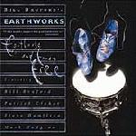

| Artist: | Bill Bruford's Earthworks |
| Title: | Footloose And Fancy Free |
| Label: | Discipline Global Mobile DGM 0201 |
| Length(s): | 118 minutes |
| Year(s) of release: | 2002 |
| Month of review: | [05/2002] |
| 1) | Footloose And Fancy Free | 9.01 |
| 2) | If Summer Had Its Ghosts | 8.29 |
| 3) | A Part, And Yet Apart | 10.26 |
| 4) | Triplicity | 7.39 |
| 5) | Come To Dust | 10.53 |
| 6) | No Truce With The Furies | 6.55 |
| 7) | The Wooden Man Sings, And The Stone Woman Dances | 7.20 |
Disc 2
| 1) | Revel Without A Pause | 8.42 |
| 2) | Never The Same Way Once | 10.16 |
| 3) | Original Sin | 7.49 |
| 4) | Cloud Cuckoo Land | 8.08 |
| 5) | Dewey-eyed, Then Dancing | 6.33 |
| 6) | The Emperor's New Clothes | 7.45 |
| 7) | Bridge Of Inhibition | 7.51 |